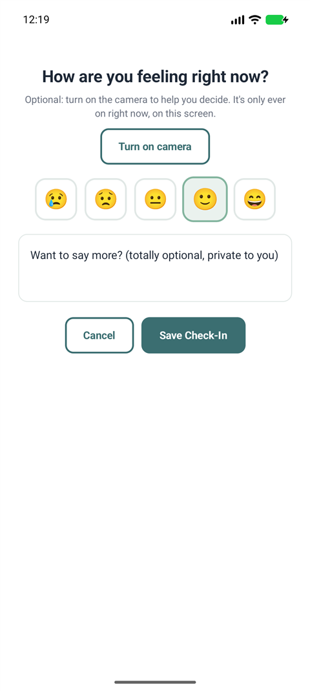
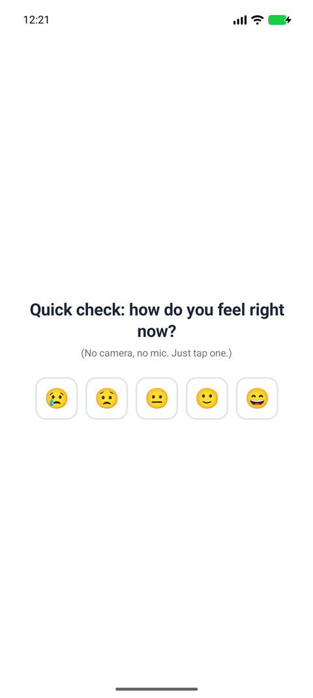
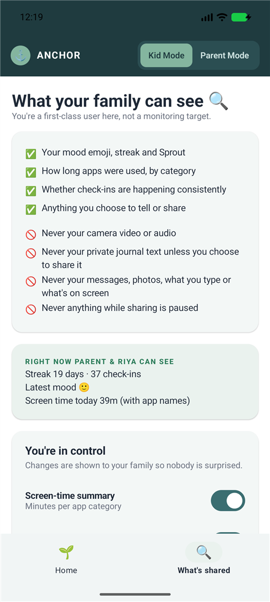
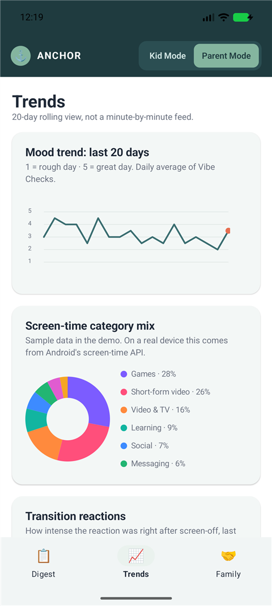
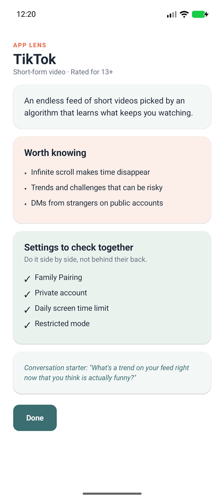

Anchor is a consent-based digital wellbeing co-pilot for Gen Alpha families. It's not surveillance: nothing covert, nothing diagnostic, and the child can see everything.
Gen Z, the first generation raised on smartphones, building the tool we wish our families had.
A toddler who only eats with a screen on. A meltdown the second a device is taken away. Existing parental-control apps report screen time, not how a child is actually doing.
Sources: Annie E. Casey Foundation; CDC survey data; Jonathan Haidt, The Anxious Generation. Full references in the Research Dossier.
One Android app with two experiences. The kid is a first-class user, not a monitoring target. The product only works if kids want to open it.
Captured from the Android app running on an emulator in demo mode (sample family data, clearly labelled in-app).
Kid Mode: Sprout & Vibe Check

Vibe Check

Transition Check

What my family can see
Parent: Family Digest

Parent: Trends

App Lens
Research on device-removal reactions describes a withdrawal response (dopamine crash, time-blindness, loss of control). Instead of filming a child's face, Anchor measures the moment after, with the child's own tap.
Android's Usage Access API notices a long session in a video, game or social app has ended. No screen contents are read.
A gentle notification: "Quick check: how do you feel right now?" No camera, no mic.
The child picks an emoji; reaction time and intensity are recorded as derived scores only.
3 of the last 5 tough transitions → "worth a conversation", with a starter like trying a 2-minute warning.
Built to COPPA (2025), BIPA-style and GDPR-K / UK Children's Code principles from day one, and to Google Play's rules for transparent child-monitoring apps.
Judges should know exactly what they're looking at.
| Capability | Web prototype | Android app |
|---|---|---|
| Vibe Check, streak, Sprout growth, lexicon sentiment | Real | Real |
| Camera mirror with visible indicator (never analyzed) | Real | Real CameraX preview only |
| Transition Check after screen-off | Simulated button | Real detects session end via Usage Access |
| Screen-time category mix | Simulated | Real Android UsageStatsManager |
| Parent dashboard & alert engine | Real on seeded history | Real on live + sample data |
| Kid ↔ parent sync across devices | n/a | Real via Anchor Relay (this server) |
| AI-written weekly digest (Claude) | n/a | Real when the relay has an API key |
| Demo family history (20 days) | Seeded | Seeded in "Try the demo", labelled |
Install the APK, tap Try the demo on this phone to switch between Kid and Parent Mode, or set up a real family with a parent phone and a kid phone.
Android 8.0+. Sideloading needs "Install unknown apps" allowed for your browser. A Google Play listing is in progress.
Check-in loop, gamified Sprout, parent dashboard on simulated data.
Real screen-time API + real transition detection (shipped in the Android build), then 20–50 pilot families.
NLP journaling, child-psychologist review of alert thresholds, school counselor pilot.
Independent evidence review, COPPA/BIPA/GDPR-K audit, broader rollout.